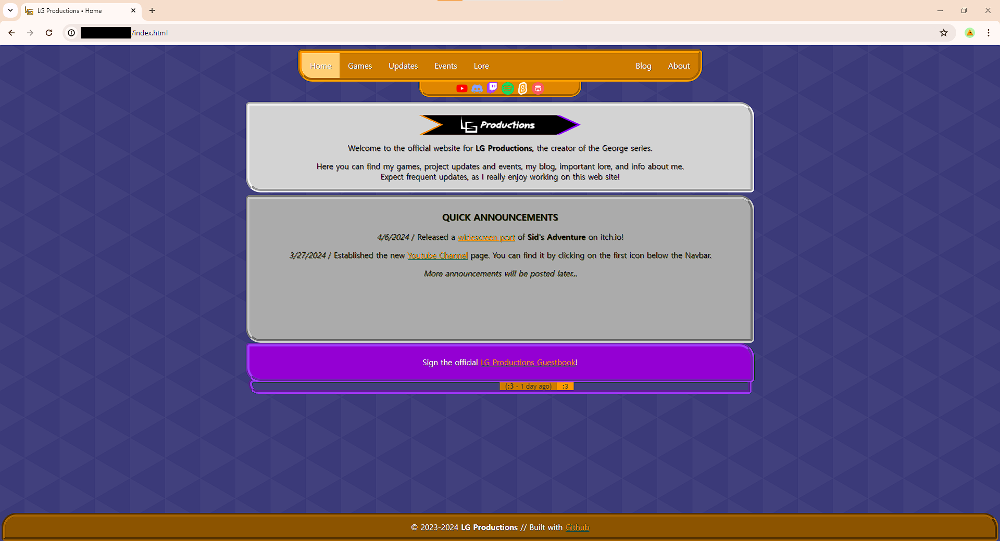
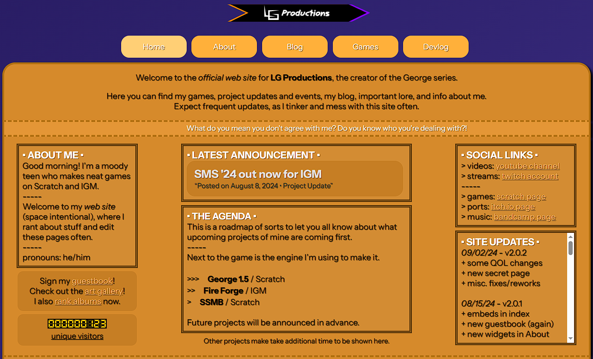
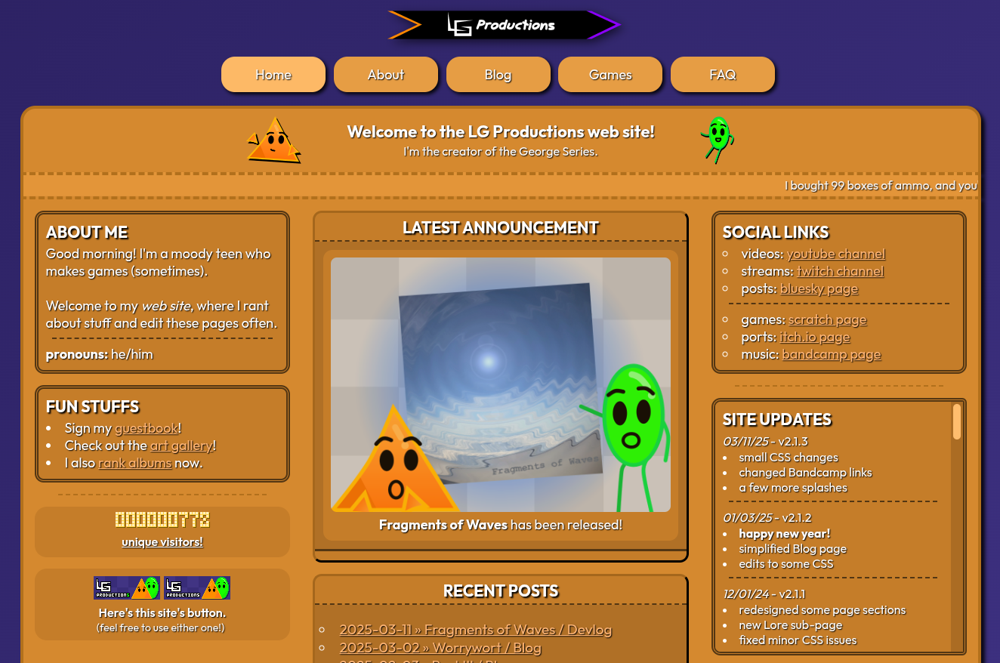
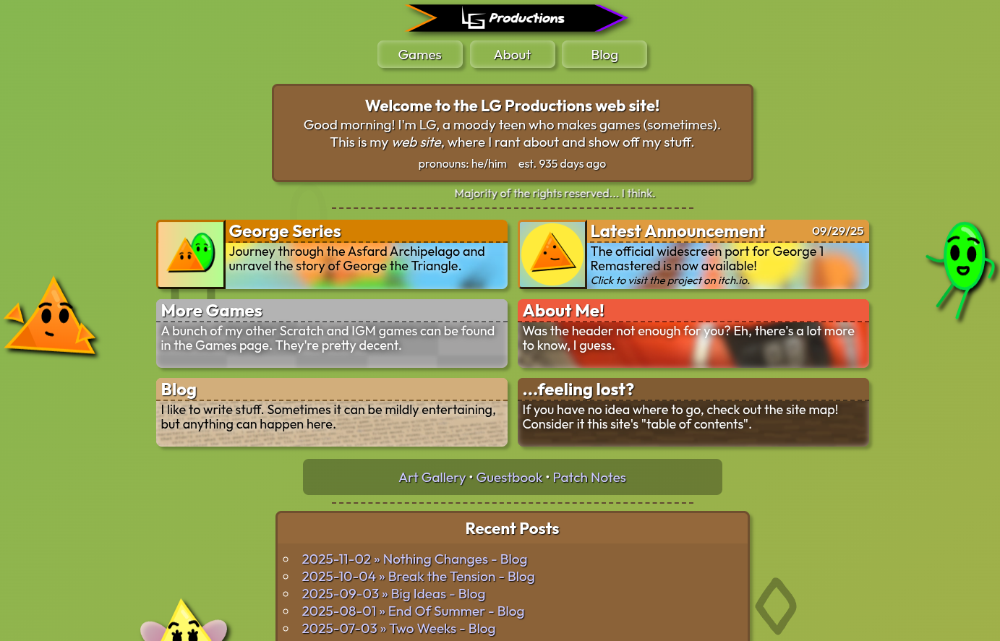
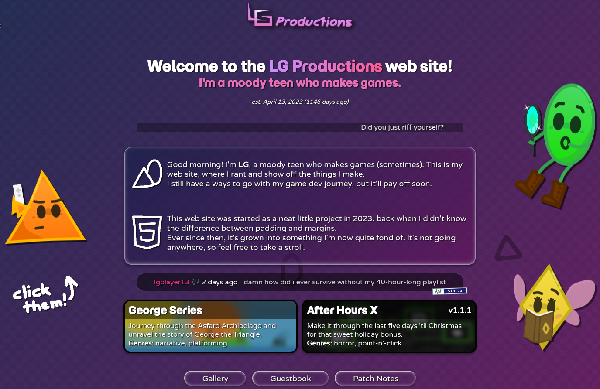

epic site versions of history
This site's been through a lot. No one gets it right the first time, as the saying goes. To be blunt, none of the versions below got it right. They didn't even come close.
But color theory and lists be damned, I love dwelling on the past. And now you can too!
Or, you can just visit the wayback machine yourself. It's up to you.
graphic design is my passion
Select a version to see its history.
Take a trip!
version 1.0

Back when the site was on GitHub Pages, it looked something like this. I didn't archive much of this version, except for the Old Blog and Devlog.
I barely knew anything about web design, and was mostly going off what I knew from Idle Game Maker (mainly The Lost Labyrinths). While this definitely helped get the site off the ground, it looked incredibly ugly. At least I was having fun.
Before I settled on Atabook, I used the now-defunct 123Guestbook. It had a nice widget, which you can see near below the purple box.
I was also unaware that "120.0.0.7" is the localhost, going so far as to censoring it.
Take a trip!
version 2.0

And here's where I moved back to Neocities. Not sure why I left in the first place, but oh well.
This design fully embraced the color orange. While my HTML skills had been steadily improving, my CSS was still crap, for lack of a better word (which is surprising, since SMS '24 looks okay).
Even though I just said my HTML skills were improving, I didn't know how to use lists, resulting in some questionable design choices.
The response to this version was shockingly positive, but it would only be a few months before I really stepped up my game.
Take a trip!
version 2.1

Well, the colors are still hard to digest, but everything else looks noticeably better! I don't know what I did in the three months between versions, but this is a lot more like it.
I forgot to mention in v2.0's section, but this version had a variety of themes! They came in green, turquoise, and purple, and only the last one was worth using!
Around this time, the new blog was introduced as well. Even though the text was cramped and a bit hard to read, it was another step in the right direction.
It would take six months for the next major update, but I'd say this is where the site got "good".
This update was also so good that I had bricks thrown at my knees!
Take a trip!
version 3.1

Now this was the stuff back in the day. I know I said the gap between versions was six months, but in reality, v3.0 only took six days. But I had a lot of fun making it!
This is where I started shoving a bunch of my characters into different pages, in an effort to bring out my "personality". Having them floating there looks kinda odd now, but it's not like we don't have those nowadays.
Colors were yet a persistent struggle in my pre-5.0 days, and those browns weren't exactly flattering. And little did I know, the bulk of this design would end up sticking around for over a year.
Take a trip!
version 4.0.2

I'm mixed about v4.0. On the one hand, it introduced stuff like the new logo, proper site colors, and the clickable floating characters. On the other, though, this design ended up being a nightmare to expand upon.
The beta version of v4.1 was so disastrous that I ended up scrapping the whole thing and making v5.0 (you can read more about it here). That whole "liquid glass" thing I was going for never really stuck, and this version ended up being kind of a mess.
People still responded positively to it, so I considered it a success at the time.